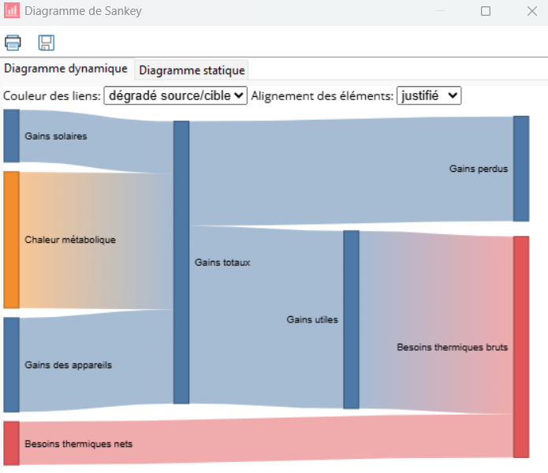

Projet de modélisation énergétique · Pléiades
Simulation thermique dynamique (Pléiades) d’une maison de 70,5 m².
Étude de simulation thermique dynamique d’une maison de 70,5 m² à Trappes. Le travail cherche à limiter les besoins de chauffage et les heures d’inconfort, en tenant compte des rythmes d’occupation et des conditions climatiques.

Pourquoi cette étude ?
Améliorer le confort sans perdre de vue les usages réels
Le projet de cours demandait de faire évoluer un modèle de maison pour maîtriser les besoins de chauffage, éviter l’inconfort en hiver et réduire les heures d’inconfort estival. Les cibles étaient inférieures à 15 kWh/m².an pour le chauffage, aucune heure d’inconfort hivernal et un maximum de 10 heures d’inconfort estival selon le critère étudié.
Le modèle représente une maison située à Trappes. Les résultats dépendent des caractéristiques de l’enveloppe, des consignes et des scénarios d’occupation définis dans l’exercice.
Démarche
Agir sur l’enveloppe, les apports et les scénarios
Dans Pléiades, j’ai paramétré l’enveloppe, les apports internes, les scénarios d’occupation et d’éclairage, la ventilation et les protections solaires. J’ai comparé les besoins de chauffage et les heures hors de la zone de confort du diagramme de Givoni.
- Repérage des causes de surchauffe estivale et d’inconfort aux périodes occupées.
- Modification des scénarios d’occultation et de ventilation nocturne.
- Étude de leviers complémentaires, dont les débords solaires et les consignes.
- Comparaison des résultats avant et après évolution du modèle, sur l’année simulée.
Résultats du modèle Pléiades
Les objectifs de simulation sont atteints pour les hypothèses retenues
Pour la zone principale de 70,5 m², le modèle estime un besoin de chauffage idéal de 440,8 kWh/an, soit 6,3 kWh/m².an. Le diagramme de Givoni classe 4 023 heures occupées sur 4 030 dans la zone de confort (99,8 %) ; les 7 heures hors zone ne sont pas distinguées entre inconfort chaud et froid dans l’export.
Ces chiffres décrivent le modèle et ses scénarios, pas une mesure sur un bâtiment construit. La simulation intègre des horaires d’occultation adaptés à l’été, une surventilation nocturne, des débords solaires et des consignes corrigées.

Livrables
Le projet comprend le modèle Pléiades, les scénarios de simulation et les exports de besoins énergétiques et de confort. Une synthèse complémentaire peut être demandée par e-mail.
Demander les visuels par e-mail